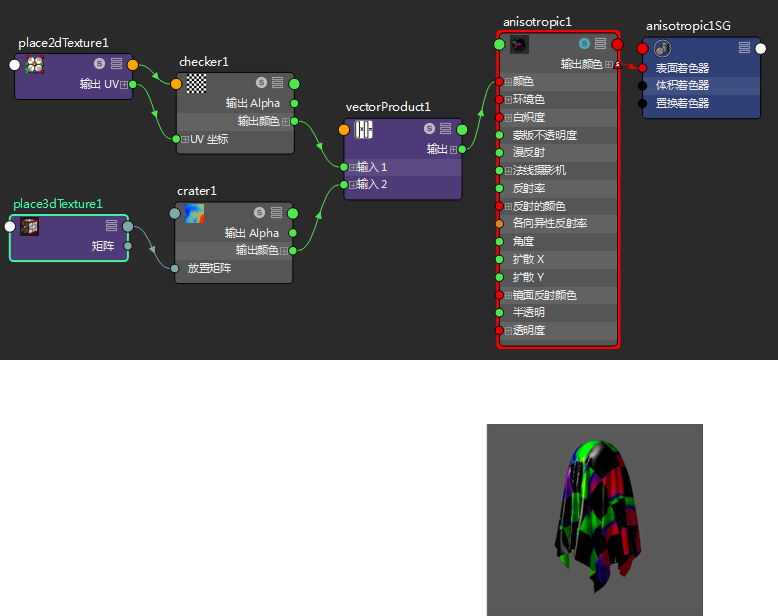

有关“向量积”(Vector Product)工具的描述，请参见向量积。
向量相乘
- 创建一种材质，在这种情况下为“各向异性”(Anisotropic)。
- 创建“向量积”(Vector Product)节点，并将其“输出”(Output)属性连接到材质节点上的输入属性；例如“各向异性”(Anisotropic)的“颜色”(Color)输入。
- 创建两个纹理节点，在这种情况下为“棋盘格”(Checker)和“凹陷”(Crater)。
- 将这些纹理连接到“向量积”(Vector Product)节点的“输入 1”(Input 1)和“输入 2”(Input 2)。例如，将“棋盘格”(Checker)节点的“输出颜色”(Out Color)连接到“输入 1”(Input 1)，并将“凹陷”(Crater)节点的“输出颜色”(Out Color)连接到“输入 2”(Input 2)。
-
选择“向量积”(Vector Product)节点。在特性编辑器中，调整属性（如“操作”(Operation)）并在材质查看器中查看结果。
以下示例显示了选择“叉积”(Cross Product)时，材质查看器中的着色器网络及其渲染。
